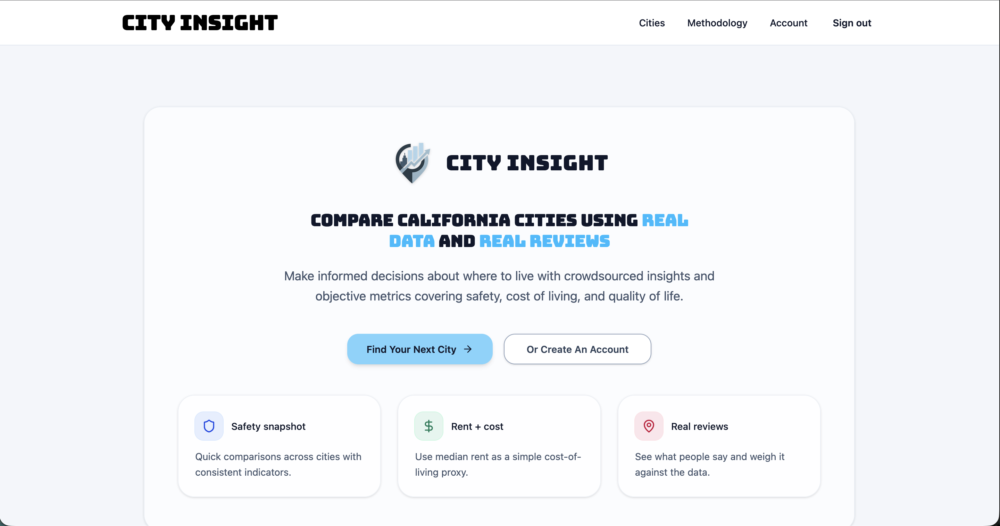
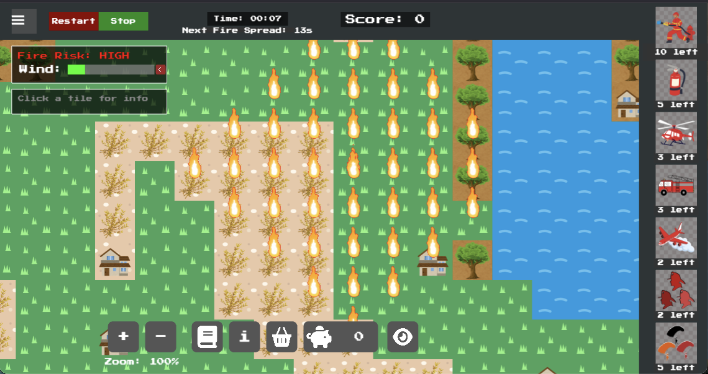
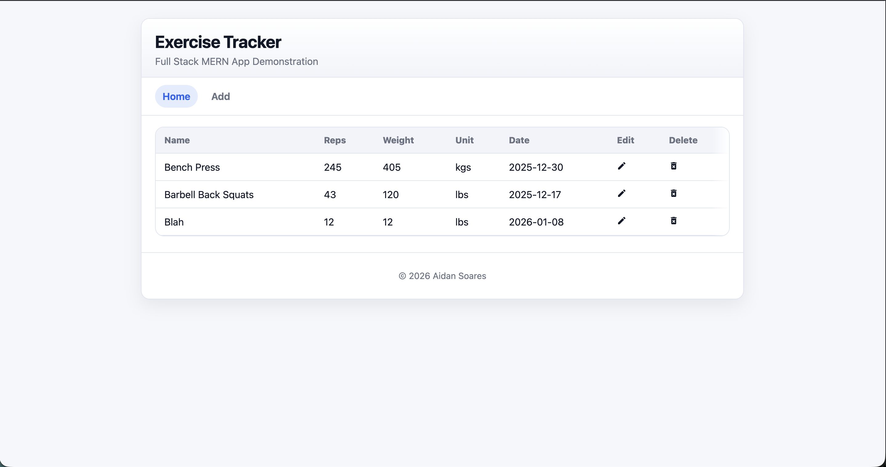
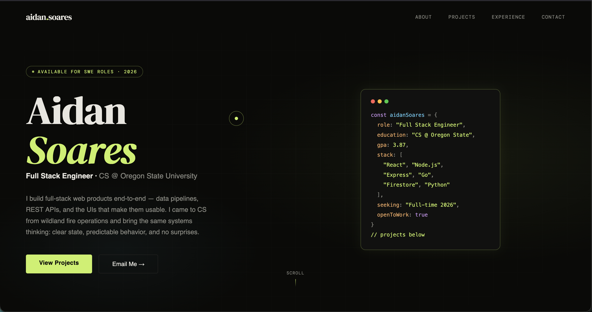

Full Stack Engineer ·
CS @ Oregon State University
I build full-stack web products end-to-end — data pipelines, REST APIs, and the UIs that make them usable. I came to CS from wildland fire operations and bring the same systems thinking: clear state, predictable behavior, and no surprises.
CS senior at Oregon State (remote), graduating June 2026. I build full-stack products end-to-end — data modeling, API design, UI polish — with a bias toward clarity and shipping over cleverness.
Before CS, I supervised a 20-person wildland fuel reduction crew for Santa Barbara County Fire — zero incidents over 16 months of high-consequence operations. I bring the same approach to engineering: predictable systems, clear state, no surprises.

City analytics app that combines public datasets and user reviews into versioned, non-destructive metrics. Built the data pipeline + Firestore model, shipped secure REST endpoints, and designed map-driven dashboards that make the tradeoffs visible.

Browser-based wildfire management simulation. Built a modular fire spread engine influenced by terrain + weather, plus a synchronized simulation loop for predictable updates. Focused on clarity: tile states, fuel burn-down, and a HUD that makes the system readable while it runs.

Full-stack workout logger with a React frontend, Node/Express REST API, and MongoDB backend. Structured around fast, consistent entry — add, edit, and delete exercises with persistent data across sessions. Deployed split across Vercel and Render.

Designed and built from scratch — no frameworks, no templates. The constraint was intentional: own every pixel. Custom cursor, typewriter animation with human-paced randomized delays, scroll reveals, and a shimmer code card. Clean enough to be the first thing I show.
I'm finishing my Computer Science degree at Oregon State and looking for a full-time software engineering role starting Summer 2026. If you're hiring or just want to connect, feel free to reach out.
aidansoares.dev@gmail.com